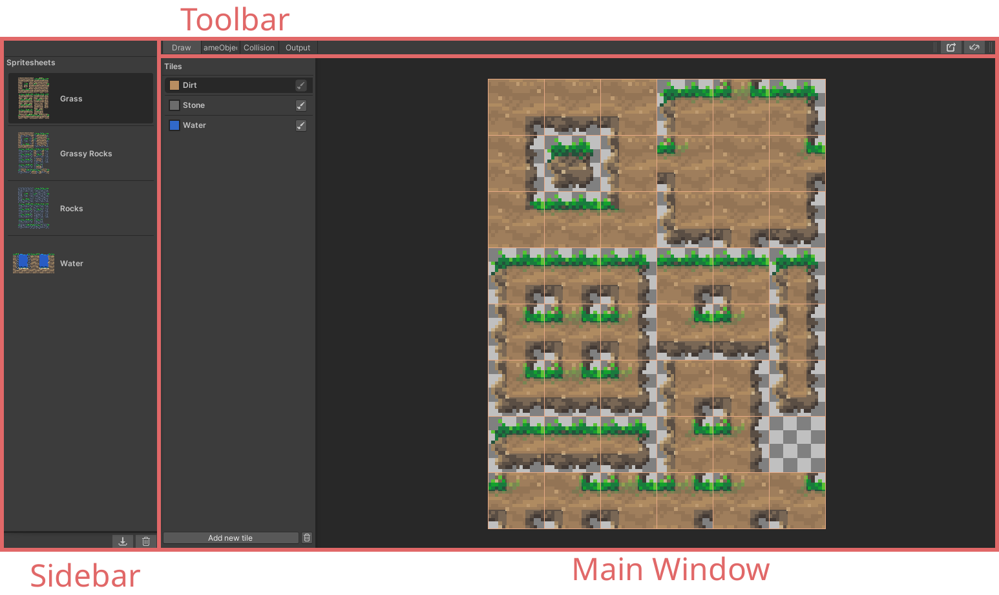
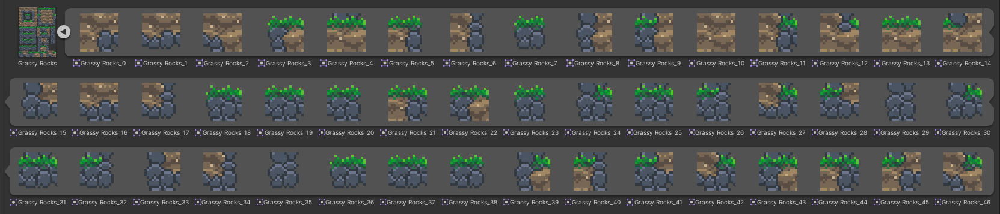
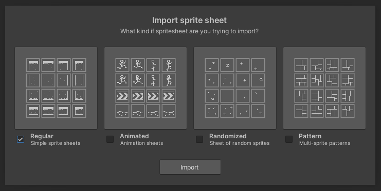
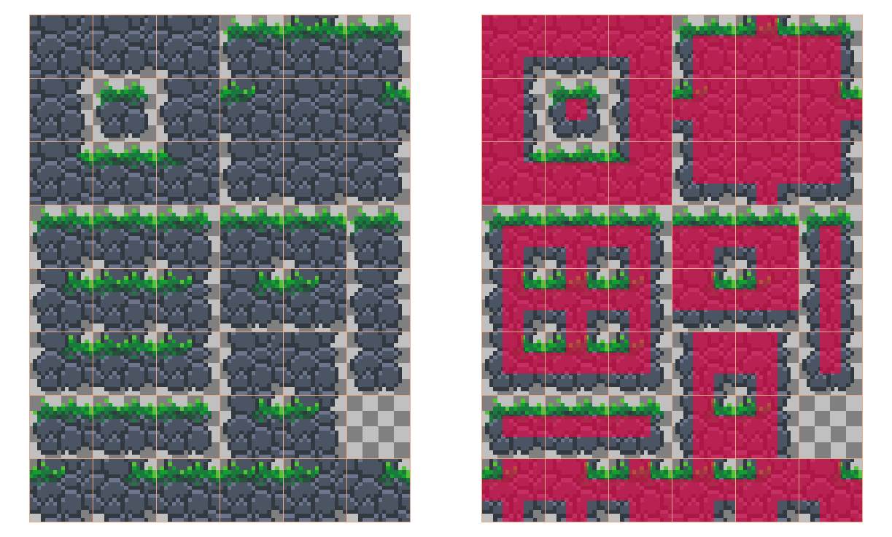
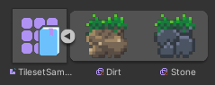
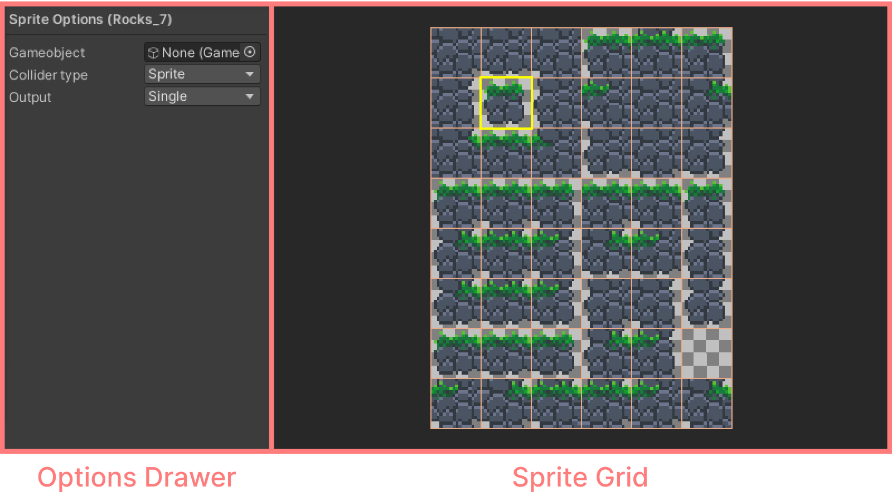
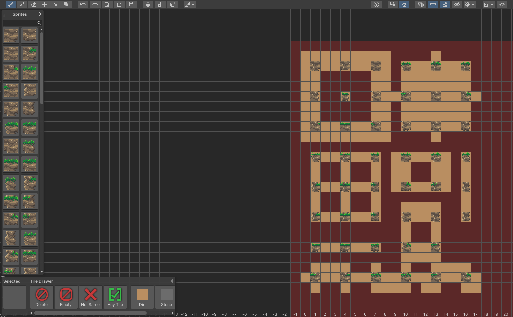
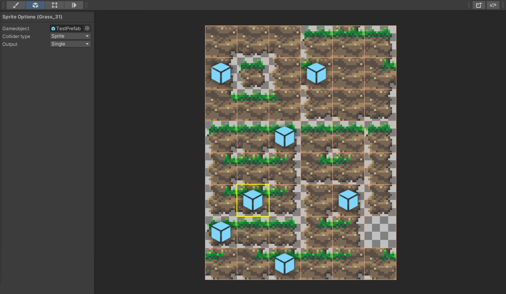
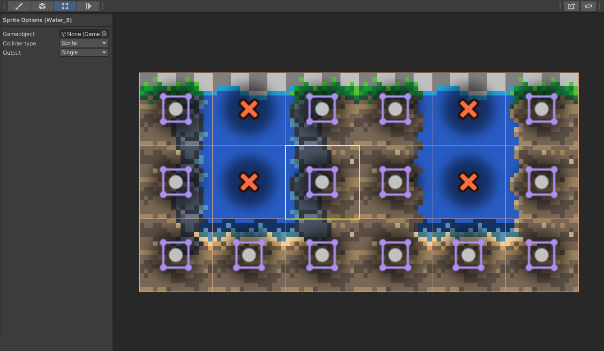

How to open the Tileset Editor
To use the tileset editor, you first need to create a tileset container.
- Go to the project window, right click, and navigate to
Create/2D/Tiles/Tileset Container
After this is done, you can simply double click on the newly created container asset to edit it in the Tileset Editor window.
The editor window
The Tileset Editor consists of 3 main parts:
- The Sidebar, where you’ll select and manage your sprite sheets,
- The Toolbar, where you can switch between views of the main window,
- And the Main Window, where you’ll edit your sprite sheets.

Getting started
To create rule tiles using the Tileset Editor, first you’ll have to import a sprite sheet. A sprite sheet is a single image file, sliced up into multiple sprites.

You can import a sprite sheet in two ways:
- Drag & drop the sprite sheet into the sidebar (The full sheet, not individual sprites),
- or by clicking the import button at the bottom of the sidebar and selecting your sprite sheet there.
After you’ve selected the image to import, a window will appear to select the type of sprite sheet you imported. For now, select “regular” and click on “Import”. If you wish to learn more about the other import types, you can head over to the import window page.

Once this is done, select the draw tab from the toolbar, and create a new tile in the main window.
- You can change the color of the tile by clicking on the color swatch,
- You can edit the name by clicking on the name text,
- And most importantly, you can draw with the tile by selecting it with the brush icon.
After you’ve selected a tile, you can start drawing on the sprite sheet. Press and hold left click to paint with the selected tile, or right click to erase a painted tile.
Every sprite on the sprite sheet gets a 3x3 grid of tiles. The center spot represents which tile the sprite belongs to, while the surrounding 8 tiles represent it’s neighbors. For example: if a sprite is a top part of a pillar that has continuity with the sprite below it, than you’d draw the tile in the center spot and below it.
Look at the following example to get a better idea of how a simple sprite sheet should be set up, I’ve changed the color of the tile here so it’s easier to see:

Once you’re done drawing your tiles, you can click the export button on the right side of the toolbar. The container asset you’re currently editing will be highlighted in the project window after the export has finished. Click on the small arrow, and more your tile (or multiple tiles) into a tile palette to start using them in your scene.
The Sidebar
The sidebar shows all the sprite sheets that have been added to the container asset. You can select, add and remove them in this panel.
You have two options to add a new sprite sheet to the panel.
- You can drag and drop them into the sidebar, or
- You can click the import button at the bottom of the sidebar.
After selecting an image to import, the import window will appear. Here you can select how you’d like to import your sprite sheet. You can also cancel the import process to by clicking outside the import window. Head to this page to learn more about the import window.
To remove a sprite sheet from the sidebar, select it, and either
- press the Delete key, or
- press the thrash icon at the bottom of the sidebar.
A popup will appear to confirm if you’re sure about deleting the sprite sheet. If you are, press “Yes”.
Deleting a sprite sheet
Deleting a sprite sheet means you’ll lose any tiles attached to those sprites. Which will take effect after exporting.
Tiles created in the draw tab will not get deleted, but the neighbor rules will be lost!
The Main Window
The main window is the place where you’ll spend most of your time while making tilesets. The content of the main window will depend on which editing tab you’ve selected in the toolbar, but the layout of the window is the same regardless of which tab you’ve selected:
- On the left side, you’ll see the options drawer.
- On the right side, you’ll see the sprite grid.

The sprite grid will always show the sprites, but what you can do on top of the sprites is based on which editing tab you’ve selected on the toolbar. The options drawer does not have a consistent element to it, but some editing tabs share the same options.
You can read about the separate functions below, at the editing tabs section.
The Toolbar
The toolbar is where you select the various editing tabs of the main window, and where you can perform other actions that are not specifically tied to any or a single tab.
On the left side of the toolbar you can switch between the tabs of the main window, while on the right side, you’ll find all the other options. The following sections will follow the order of the buttons from left to right.
Editing tabs bar
You can use the editing tabs to select the contents of the main window. Read here to learn about the specific tabs.
Export button
Clicking the export button will export all tiles and save it as a sub-asset of the container. The asset will be highlighted in the project folder once exported. Unlike the BRT Editor, which shows a drop down menu when pressed, this button immediately exports the tiles using the default configuration.
You can still access all the hidden settings by switching to the BRT Editor, with the rightmost button in the toolbar.
Switch to BRT Editor
The tileset editor was designed to be as simple and easy to use as it could be, but what if you still want to access the extra features that Better Rule Tiles has to offer? If that is the case, you can switch to the regular BRT Editor by clicking the rightmost button in the toolbar. This will open the same container asset you’re editing, but within the more advanced BRT Editor.

When opening the BRT Editor, you’ll see all the sprites from all of your sprite sheets laid out inside a red zone. The red zone indicates the area reserved for the sprite sheets. The area is not locked, you are free to modify the cells in any way you like, but it is heavily discouraged to use that area for anything else than modifying already existing sprite sheets. When adding a new sprite sheet to the container, it’ll not care if you’ve manually placed anything in the red zone, it will overwrite it.
The rest of the grid can be used however you’d like. Anything you add there will be exported alongside the sprite sheets, no matter which editor you use for exporting them. You can use this for example to create preset blocks, create tiles with extended rules, or just to create different rules for the same sprites.
Read more about the capabilities of the BRT Editor here.
Editing tabs
The tileset editor has four different editing tabs:
- Draw tab - To edit tiles and neighbor positions
- GameObject tab - To assign gameobjects to sprites
- Collision tab - To set the collision type of sprites
- Output tab - To preview animations
Read more about the individual tabs below.
Draw tab
The draw tab is where you’ll create and manage your tiles, and draw your neighbor rules.
- To create a tile, click on the
Add new tilebutton at the bottom of the options drawer. - To rename a tile, click on it’s name. That will select it for renaming.
- To change the color of a tile, click on the color swatch right next to the name of the tile.
- To select the tile for drawing or other actions like deleting, click on the button with the brush icon
- To delete a tile, select it and click the delete button at the bottom of the options drawer.
After you’ve selected a tile, you can start drawing on the sprite sheet. Press and hold left click to paint with the selected tile, or right click to erase a painted tile. Every sprite on the sprite sheet gets a 3x3 grid of tiles. The center spot represents which tile the sprite belongs to, while the surrounding 8 tiles represent it’s neighbors.
GameObject tab
The GameObject tab gives you an easy way of assigning gameobjects to sprites, removing assigned gameobjects, and previewing which sprites have gameobjects attached to them.
There are multiple ways of assigning gameobjects using the GameObjects tab:
- Click on a sprite to select it, and assign the gameobject in the options drawer.
- Double click on the sprite to bring up the asset selector window.
- Or drag and drop a prefab on the desired sprite.
If a sprite has a gameobject assigned to it, it’ll show a prefab icon. To see which specific prefab is attached, you’ll have to select the sprite and look in the options drawer.

To remove a gameobject reference from a sprite you can either select none in the asset selector window, or just by simply right clicking on the sprite.
Collision tab
The collision tab let’s you preview what type of collision your sprites are using. Each sprite will display an icon on top of it depending on what type of collision in has. You can change and cycle through the collisions by right clicking on the sprite.

Output tab
In the output tab you can preview any animation you’ve imported using the import window, or created manually.
The contents of the options drawer are the same as in the draw tab or gameobject tab, so if you’re not using animated sprites, you can do everything on the other tabs.